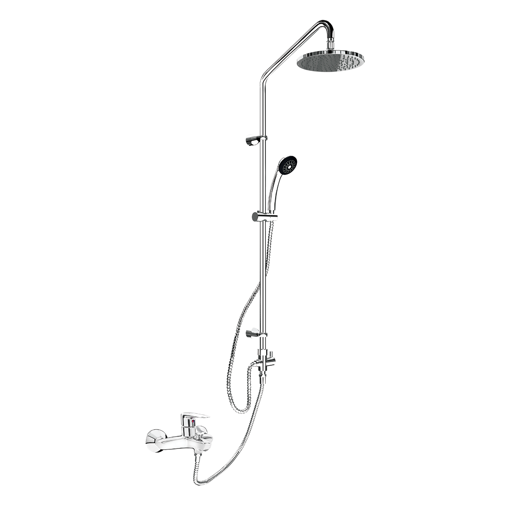
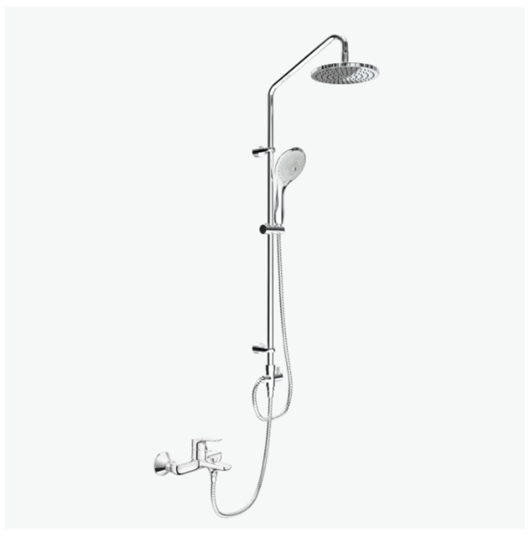

Với sự kết hợp hoàn hảo giữa thiết kế tinh tế, chất liệu bền bỉ và các tính năng massage vượt trội, sen cây BFV-1115S đứng này chính là điểm nhấn sang trọng, tiện nghi mà bạn hằng mong ước.Thiết kế sen cây BFV-1115S đẳng cấpSen cây BFV-1115S sở hữu kiểu dáng đứng thanh lịch, hiện đại, là lựa chọn lý tưởng cho các không gian phòng tắm có buồng tắm vách kính. Thiết kế này không chỉ tối ưu hóa diện tích mà còn mang lại một vẻ ngoài sang trọng, tinh tế, nâng tầm đẳng cấp thẩm mỹ cho toàn bộ phòng tắm.Với chiều cao 296 và độ rộng 1084 mm, sen cây BFV-1115S tạo nên sự cân đối hoàn hảo, dễ dàng lắp đặt mà vẫn đảm bảo sự hoành tráng.Chất liệu bền bỉ vượt thời gianINAX luôn đặt chất lượng lên hàng đầu. Chính vì thế, vòi sen tắm đứng cao cấp BFV-1115S được hoàn thiện với lớp mạ Crom/Niken dày, cao cấp, không chỉ tạo nên độ sáng bóng lộng lẫy mà còn có khả năng chống gỉ sét, chống ăn mòn tối ưu, giữ cho sản phẩm luôn mới đẹp như ngày đầu, bất chấp môi trường ẩm ướt của phòng tắm. Độ bền vượt trội của chất liệu này đảm bảo bạn sẽ có một sản phẩm sử dụng lâu dài, tiết kiệm chi phí bảo trì.Tính năng độc đáoĐiều làm nên sự khác biệt của sen tắm INAX chính là những tính năng massage và điều chỉnh tiện ích được tích hợp:Vòi sen lớn ôm trọn cơ thể: Bát sen lớn hình tròn được thiết kế đặc biệt để tạo ra dòng nước dồi dào, ôm trọn cơ thể bạn từ đầu đến chân. Dòng nước mềm mại này mang lại cảm giác thoải mái tột độ, giúp xoa dịu các cơ bắp mệt mỏi sau một ngày dài.Tay sen massage xoa dịu căng thẳng: Tay sen cây BFV-1115S kiểu dáng trang nhã (-3C) không chỉ đẹp mắt mà còn sở hữu chế độ phun sương massage độc đáo. Các tia nước mềm mại như sương mù nhẹ nhàng vuốt ve làn da, tạo cảm giác thư giãn sâu, giúp bạn giảm căng thẳng và hồi phục tinh thần hiệu quả.Vòi phun ẩn tinh tế: Bộ sen được trang bị vòi phun ẩn bên trong với dòng chảy tạo bọt massage dễ chịu. Tính năng này không chỉ tăng cường hiệu suất làm sạch mà còn mang lại cảm giác êm ái, thư thái khi sử dụng.Điều chỉnh chiều cao linh hoạt: Một điểm cộng lớn là khả năng điều chỉnh độ cao của tay sen, giúp bạn dễ dàng tùy chỉnh vị trí phun nước phù hợp với chiều cao của mỗi thành viên trong gia đình, từ trẻ nhỏ đến người lớn, đảm bảo trải nghiệm tắm luôn tiện nghi nhất.Vận hành bền bỉ: Sen tắm BFV-1115S được trang bị Van điều khiển bằng sứ cao cấp, nổi tiếng với độ bền vượt trội và khả năng chống rò rỉ tuyệt đối trong mọi điều kiện áp lực nước cấp (khuyến nghị từ 0.1 - 0.5 MPa). Điều này không chỉ giúp tiết kiệm nước mà còn mang lại sự an tâm trong quá trình sử dụng.Hơn nữa, van gật gù nóng lạnh cho phép bạn điều chỉnh nhiệt độ nước nhanh chóng và chính xác, từ đó dễ dàng tìm được mức nhiệt độ lý tưởng chỉ trong tích tắc, tránh tình trạng nước quá nóng hoặc quá lạnh.Hướng dẫn lắp đặt và sử dụng sen cây BFV-1115SFile chi tiết: UM-0233_BFV-1115S_V2_2020.08.25.pdfThông số kỹ thuậtChất liệuLớp mạ Crom/ Niken dày, tạo độ sáng bóng bền lâuKiểu dángĐứngKích thước296 x 1084 mm (Cao x Rộng)Tính năng- Có khả năng điều chỉnh độ cao của tay sen phù hợp với chiều cao mỗi người - Van điều khiển bằng sứ có độ bền cao, chống rò rỉ trong mọi điều kiện áp lực - Vòi phun ẩn bên trong, dòng chảy tạo bọt massage dễ chịu - Van gật gù điều chỉnh nhiệt độ nước nhanh chóng - Áp lực nước cấp 0.1 - 0.5 MPa - Tay sen (-3C) massage chế độ phun sương tạo cảm giác thư giãnThương hiệuINAXThiết kế- Sen tắm đứng tiện ích khi sử dụng cho buồng tắm vách kính, mang lại cảm giác sang trọng - Tay sen kiểu dáng trang nhã với tia nước mềm mại, xoa dịu căng thẳng - Bát sen lớn hình tròn cho dòng nước ôm trọn cơ thể, tạo cảm giác thoải mái khi tắmKhác- Hotline tư vấn và bảo hành: 18006633
Sen cây BFV-1115S
Vòi chậu thương hiệu INAX.
Đã cập nhật danh sách yêu thích.
DANH MỤC: Vòi chậu
MÃ SẢN PHẨM: BFV-1115S
DEPTH: 0mm
HEIGHT: 296mm
WIDTH: 1084mm
Với sự kết hợp hoàn hảo giữa thiết kế tinh tế, chất liệu bền bỉ và các tính năng massage vượt trội, sen cây BFV-1115S đứng này chính là điểm nhấn sang trọng, tiện nghi mà bạn hằng mong ước.Thiết kế sen cây BFV-1115S đẳng cấpSen cây BFV-1115S sở hữu kiểu dáng đứng thanh lịch, hiện đại, là lựa chọn lý tưởng cho các không gian phòng tắm có buồng tắm vách kính. Thiết kế này không chỉ tối ưu hóa diện tích mà còn mang lại một vẻ ngoài sang trọng, tinh tế, nâng tầm đẳng cấp thẩm mỹ cho toàn bộ phòng tắm.Với chiều cao 296 và độ rộng 1084 mm, sen cây BFV-1115S tạo nên sự cân đối hoàn hảo, dễ dàng lắp đặt mà vẫn đảm bảo sự hoành tráng.Chất liệu bền bỉ vượt thời gianINAX luôn đặt chất lượng lên hàng đầu. Chính vì thế, vòi sen tắm đứng cao cấp BFV-1115S được hoàn thiện với lớp mạ Crom/Niken dày, cao cấp, không chỉ tạo nên độ sáng bóng lộng lẫy mà còn có khả năng chống gỉ sét, chống ăn mòn tối ưu, giữ cho sản phẩm luôn mới đẹp như ngày đầu, bất chấp môi trường ẩm ướt của phòng tắm. Độ bền vượt trội của chất liệu này đảm bảo bạn sẽ có một sản phẩm sử dụng lâu dài, tiết kiệm chi phí bảo trì.Tính năng độc đáoĐiều làm nên sự khác biệt của sen tắm INAX chính là những tính năng massage và điều chỉnh tiện ích được tích hợp:Vòi sen lớn ôm trọn cơ thể: Bát sen lớn hình tròn được thiết kế đặc biệt để tạo ra dòng nước dồi dào, ôm trọn cơ thể bạn từ đầu đến chân. Dòng nước mềm mại này mang lại cảm giác thoải mái tột độ, giúp xoa dịu các cơ bắp mệt mỏi sau một ngày dài.Tay sen massage xoa dịu căng thẳng: Tay sen cây BFV-1115S kiểu dáng trang nhã (-3C) không chỉ đẹp mắt mà còn sở hữu chế độ phun sương massage độc đáo. Các tia nước mềm mại như sương mù nhẹ nhàng vuốt ve làn da, tạo cảm giác thư giãn sâu, giúp bạn giảm căng thẳng và hồi phục tinh thần hiệu quả.Vòi phun ẩn tinh tế: Bộ sen được trang bị vòi phun ẩn bên trong với dòng chảy tạo bọt massage dễ chịu. Tính năng này không chỉ tăng cường hiệu suất làm sạch mà còn mang lại cảm giác êm ái, thư thái khi sử dụng.Điều chỉnh chiều cao linh hoạt: Một điểm cộng lớn là khả năng điều chỉnh độ cao của tay sen, giúp bạn dễ dàng tùy chỉnh vị trí phun nước phù hợp với chiều cao của mỗi thành viên trong gia đình, từ trẻ nhỏ đến người lớn, đảm bảo trải nghiệm tắm luôn tiện nghi nhất.Vận hành bền bỉ: Sen tắm BFV-1115S được trang bị Van điều khiển bằng sứ cao cấp, nổi tiếng với độ bền vượt trội và khả năng chống rò rỉ tuyệt đối trong mọi điều kiện áp lực nước cấp (khuyến nghị từ 0.1 - 0.5 MPa). Điều này không chỉ giúp tiết kiệm nước mà còn mang lại sự an tâm trong quá trình sử dụng.Hơn nữa, van gật gù nóng lạnh cho phép bạn điều chỉnh nhiệt độ nước nhanh chóng và chính xác, từ đó dễ dàng tìm được mức nhiệt độ lý tưởng chỉ trong tích tắc, tránh tình trạng nước quá nóng hoặc quá lạnh.Hướng dẫn lắp đặt và sử dụng sen cây BFV-1115SFile chi tiết: UM-0233_BFV-1115S_V2_2020.08.25.pdfThông số kỹ thuậtChất liệuLớp mạ Crom/ Niken dày, tạo độ sáng bóng bền lâuKiểu dángĐứngKích thước296 x 1084 mm (Cao x Rộng)Tính năng- Có khả năng điều chỉnh độ cao của tay sen phù hợp với chiều cao mỗi người - Van điều khiển bằng sứ có độ bền cao, chống rò rỉ trong mọi điều kiện áp lực - Vòi phun ẩn bên trong, dòng chảy tạo bọt massage dễ chịu - Van gật gù điều chỉnh nhiệt độ nước nhanh chóng - Áp lực nước cấp 0.1 - 0.5 MPa - Tay sen (-3C) massage chế độ phun sương tạo cảm giác thư giãnThương hiệuINAXThiết kế- Sen tắm đứng tiện ích khi sử dụng cho buồng tắm vách kính, mang lại cảm giác sang trọng - Tay sen kiểu dáng trang nhã với tia nước mềm mại, xoa dịu căng thẳng - Bát sen lớn hình tròn cho dòng nước ôm trọn cơ thể, tạo cảm giác thoải mái khi tắmKhác- Hotline tư vấn và bảo hành: 18006633
DANH MỤC: Vòi chậu
MÃ SẢN PHẨM: BFV-1115S
DEPTH: 0mm
HEIGHT: 296mm
WIDTH: 1084mm